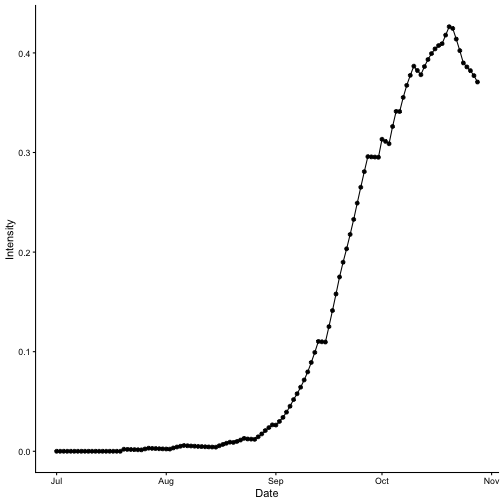

A fork of {cropsim} (Hijmans et al. 2009) designed to make using the EPIRICE model (Savary et al. 2012) for rice diseases easier to use. This version provides easy to use functions to fetch weather data from NASA POWER, via the {nasapower} package (Sparks 2018) and predict disease intensity of five rice diseases using a generic Susceptible-Exposed-Infectious-Removed (SEIR) model (Zadoks 1971) function, seir().
The original EPIRICE manuscript, Savary et al. (2012), which details the model and results of its use to model global epidemics of rice diseases, was published in Crop Protection detailing global unmanaged disease risk of bacterial blight, brown spot, leaf blast, sheath blight and rice tungro, which are included in this package.
Quick start
You can easily simulate any of the five diseases for rice grown anywhere in the world for years from 1983 to near current using get_wth() to fetch data from the NASA POWER web API. Alternatively, you can supply your own weather data for any time period as long as it fits the model’s requirements.
{epicrop} is not yet on CRAN. You can install it this way.
install.packages("epicrop",
repos = c("https://adamhsparks.r-universe.dev",
"https://cloud.r-project.org"))Get weather data
First you need to provide weather data for the model; {epicrop} provides the get_wth() function to do this. Using it you can fetch weather data for any place in the world from 1983 to near present by providing the and latitude and dates or length of rice growing season as shown below.
library(epicrop)
# Fetch weather for year 2000 wet season for a 120 day rice variety at the IRRI
# Zeigler Experiment Station
wth <- get_wth(
lonlat = c(121.25562, 14.6774),
dates = "2000-07-01",
duration = 120
)
wth
#> YYYYMMDD DOY TEMP TMIN TMAX RHUM RAIN LAT
#> <Date> <int> <num> <num> <num> <num> <num> <num>
#> 1: 2000-07-01 183 25.29 23.86 27.78 92.20 23.12 14.6774
#> 2: 2000-07-02 184 26.13 23.54 29.90 86.01 17.34 14.6774
#> 3: 2000-07-03 185 25.50 24.28 27.23 94.16 29.08 14.6774
#> 4: 2000-07-04 186 25.81 24.50 27.56 92.42 13.01 14.6774
#> 5: 2000-07-05 187 25.97 25.13 27.40 92.34 32.20 14.6774
#> ---
#> 117: 2000-10-25 299 25.82 23.44 29.54 89.76 12.04 14.6774
#> 118: 2000-10-26 300 25.44 24.14 26.99 94.93 13.03 14.6774
#> 119: 2000-10-27 301 25.74 24.54 27.69 91.43 11.54 14.6774
#> 120: 2000-10-28 302 25.44 24.72 26.62 91.90 74.20 14.6774
#> 121: 2000-10-29 303 24.97 24.15 26.34 94.15 29.11 14.6774
#> LON
#> <num>
#> 1: 121.2556
#> 2: 121.2556
#> 3: 121.2556
#> 4: 121.2556
#> 5: 121.2556
#> ---
#> 117: 121.2556
#> 118: 121.2556
#> 119: 121.2556
#> 120: 121.2556
#> 121: 121.2556Modelling bacterial blight disease intensity
Once you have the weather data, run the model for any of the five rice diseases by providing the emergence or crop establishment date for transplanted rice.
bb_sim <- bacterial_blight(wth, emergence = "2000-07-01")
bb_sim
#> simday dates sites latent infectious removed
#> <int> <Date> <num> <num> <num> <num>
#> 1: 1 2000-07-01 108.6875 0.00000 0.0000 0.0000
#> 2: 2 2000-07-02 118.1002 0.00000 0.0000 0.0000
#> 3: 3 2000-07-03 128.2934 0.00000 0.0000 0.0000
#> 4: 4 2000-07-04 139.3254 0.00000 0.0000 0.0000
#> 5: 5 2000-07-05 151.2581 0.00000 0.0000 0.0000
#> ---
#> 116: 116 2000-10-24 1591.0429 47.53770 899.1008 500.0978
#> 117: 117 2000-10-25 1586.3432 45.31540 878.0311 545.1096
#> 118: 118 2000-10-26 1584.2026 42.21794 860.3615 586.3748
#> 119: 119 2000-10-27 1584.1651 61.72225 816.7307 630.0056
#> 120: 120 2000-10-28 1586.7759 79.77394 771.2554 675.4809
#> senesced rateinf rtransfer rgrowth rsenesced
#> <num> <num> <num> <num> <num>
#> 1: 1.000000 0.00000 0.00000 9.68750 1.000000
#> 2: 2.086875 0.00000 0.00000 10.49959 1.086875
#> 3: 3.267877 0.00000 0.00000 11.37416 1.181002
#> 4: 4.550811 0.00000 0.00000 12.31499 1.282934
#> 5: 5.944065 0.00000 0.00000 13.32593 1.393254
#> ---
#> 116: 1829.910875 0.00000 24.20829 30.95883 15.758425
#> 117: 1845.821305 21.71985 23.94215 32.93054 15.910429
#> 118: 1861.684737 20.49809 23.59555 34.22091 15.863432
#> 119: 1877.526763 19.50431 0.00000 35.30880 15.842026
#> 120: 1893.368413 18.05169 0.00000 36.50421 15.841651
#> diseased intensity AUDPC lat lon
#> <num> <num> <num> <num> <num>
#> 1: 0.000 0.0000000 14.91121 14.6774 121.2556
#> 2: 0.000 0.0000000 14.91121 14.6774 121.2556
#> 3: 0.000 0.0000000 14.91121 14.6774 121.2556
#> 4: 0.000 0.0000000 14.91121 14.6774 121.2556
#> 5: 0.000 0.0000000 14.91121 14.6774 121.2556
#> ---
#> 116: 1446.736 0.3730328 14.91121 14.6774 121.2556
#> 117: 1468.456 0.3679126 14.91121 14.6774 121.2556
#> 118: 1488.954 0.3629508 14.91121 14.6774 121.2556
#> 119: 1508.459 0.3567151 14.91121 14.6774 121.2556
#> 120: 1526.510 0.3490965 14.91121 14.6774 121.2556Lastly, you can visualise the result of the model run.
library(ggplot2)
ggplot(
data = bb_sim,
aes(
x = dates,
y = intensity
)
) +
labs(
y = "Intensity",
x = "Date"
) +
geom_line() +
geom_point() +
theme_classic()
Bacterial blight disease progress over time. Results for wet season year 2000 at IRRI Zeigler Experiment Station shown. Weather data used to run the model were obtained from the NASA Langley Research Center POWER Project funded through the NASA Earth Science Directorate Applied Science Program.
Meta
Please report any issues or bugs.
License: GPL-3
To cite {epicrop}, please use the output from
citation(package = "epicrop").
Code Coverage
#> epicrop Coverage: 96.47%
#> R/seir.R: 84.25%
#> R/leaf_wet.R: 92.97%
#> src/seir_core.cpp: 95.19%
#> R/internal_functions.R: 98.49%
#> R/calculate_audpc.R: 100.00%
#> R/format_wth.R: 100.00%
#> R/get_wth.R: 100.00%
#> R/helper_bacterial_blight.R: 100.00%
#> R/helper_brown_spot.R: 100.00%
#> R/helper_leaf_blast.R: 100.00%
#> R/helper_modified_kim_leaf_blast.R: 100.00%
#> R/helper_modified_kim_sheath_blight.R: 100.00%
#> R/helper_sheath_blight.R: 100.00%
#> R/helper_tungro.R: 100.00%Code of Conduct
Please note that the epicrop project is released with a Contributor Code of Conduct. By contributing to this project, you agree to abide by its terms.
Other Implementations in R
The EPIRICE model was originally written in R as a part of the {cropsim} package (Hijmans et al. 2009).
The EPIRICE model is also available from CRAN in the {ZeBook} package (Brun et al. 2018) to accompany, “Working with dynamic crop models: methods, tools and examples for agriculture and environment” (Wallach et al. 2018).
References
Brun François, David Makowski, Daniel Wallach, and James W Jones. (2018). ZeBook: Working with Dynamic Models for Agriculture and Environment. DOI: 10.32614/CRAN.package.ZeBook R package version 1.1, https://CRAN.R-project.org/package=ZeBook.
Robert J. Hijmans, Serge Savary, Rene Pangga and Jorrel Aunario. (2009). Simulation modeling of crops and their diseases. R package version 0.2-6.
Serge Savary, Andrew Nelson, Laetitia Willocquet, Ireneo Pangga and Jorrel Aunario. (2012). Modeling and mapping potential epidemics of rice diseases globally. Crop Protection, Volume 34, Pages 6-17, ISSN 0261-2194 DOI: 10.1016/j.cropro.2011.11.009.
Serge Savary, Stacia Stetkiewicz, François Brun, and Laetitia Willocquet. Modelling and Mapping Potential Epidemics of Wheat Diseases-Examples on Leaf Rust and Septoria Tritici Blotch Using EPIWHEAT. (2015). European Journal of Plant Pathology 142, no. 4:771–90. DOI: 10.1007/s10658-015-0650-7.
Adam Sparks. (2018). nasapower: A NASA POWER Global Meteorology, Surface Solar Energy and Climatology Data Client for R. Journal of Open Source Software, 3(30), 1035, DOI: 10.21105/joss.01035.
Jan C. Zadoks. (1971). Systems Analysis and the Dynamics of Epidemics. Phytopathology 61:600. DOI: 10.1094/Phyto-61-600.
Wallach, Daniel, David Makowski, James W. Jones, and François Brun. (2018) Working with dynamic crop models: methods, tools and examples for agriculture and environment. Academic Press.